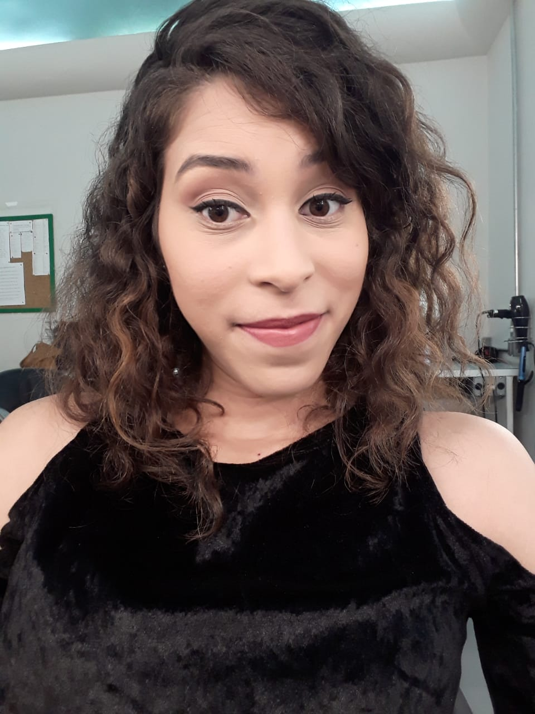

Quem somos?

Gabriele Peixoto
Jovem nerd apaixonada por tecnologia , atua como crítica de arte e cinema em São Paulo, especialista em cultura geek, aprecia música de qualidade e ótimos livros. Adora muitas séries que estão no Netflix e desenvolve carreira internacional em desenvolvimento web geek.

Julia Santos
Jovem nerd bibliotecária e amante dos livros, atua como mediadora de leitura e informação, além de crítica literária, especialista em séries e filmes de ação, romance e aventura, animadora social com músicas pop, artista e apreciadora das artes, da diversidade e da cultura.